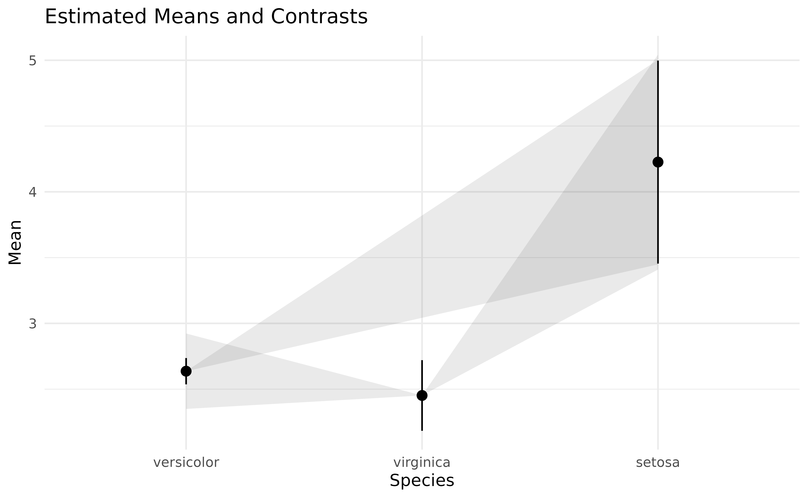
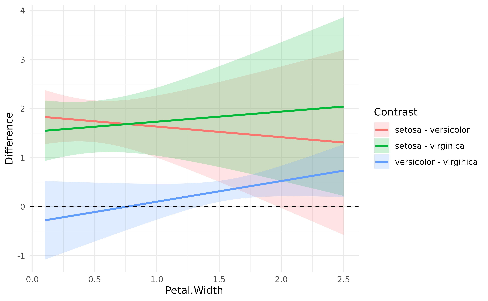

Testing pairwise differences
In the previous
tutorial, we computed marginal means at the 3 different
Species levels from the iris
dataset. However, one might also want to statistically
test the differences between each levels, which can be achieved
through contrast analysis. Although the procedure is
much more powerful, its aim is analogous to the post
hoc analysis (pretty much consisting of pairwise
t-tests), which are heavily utilized in behavioral sciences as
a way to follow up on hypotheses about global differences tested by
ANOVAs with more specific hypotheses about pairwise differences.
Let’s carry out contrast analysis on the simple model from the previous tutorial:
library(ggplot2)
library(see)
library(modelbased)
model <- lm(Sepal.Width ~ Species, data = iris)
means <- estimate_means(model)
ggplot(means, aes(x = Species, y = Mean)) +
geom_line(aes(group = 1)) +
geom_pointrange(aes(color = Species, ymin = CI_low, ymax = CI_high)) +
theme_modern()
Contrast analysis can be achieved through the
estimate_contrasts function:
estimate_contrasts(model)> Marginal Contrasts Analysis
>
> Level1 | Level2 | Difference | 95% CI | SE | t(147) | p
> ------------------------------------------------------------------------------
> setosa | versicolor | 0.66 | [ 0.49, 0.82] | 0.07 | 9.69 | < .001
> setosa | virginica | 0.45 | [ 0.29, 0.62] | 0.07 | 6.68 | < .001
> versicolor | virginica | -0.20 | [-0.37, -0.04] | 0.07 | -3.00 | 0.003
>
> Marginal contrasts estimated at Species
> p-value adjustment method: Holm (1979)We can conclude that all pairwise differences are statistically significant.
Complex model
Again, as contrast analysis is based on marginal means, it can be applied to more complex models:
model <- lm(Sepal.Width ~ Species * Petal.Width, data = iris)
contrasts <- estimate_contrasts(model)
contrasts> Marginal Contrasts Analysis
>
> Level1 | Level2 | Difference | 95% CI | SE | t(144) | p
> -----------------------------------------------------------------------------
> setosa | versicolor | 1.59 | [ 0.64, 2.54] | 0.39 | 4.04 | < .001
> setosa | virginica | 1.77 | [ 0.77, 2.78] | 0.41 | 4.29 | < .001
> versicolor | virginica | 0.18 | [-0.17, 0.54] | 0.15 | 1.27 | 0.205
>
> Marginal contrasts estimated at Species
> p-value adjustment method: Holm (1979)For instance, if we add Petal.Width in the model, we can
see that the difference between versicolor and
virginica becomes not significant (and even changes sign).
Note that we can plot simple contrast analysis through
lighthouse plots with the help of the see
package:
library(see)
plot(contrasts, estimate_means(model)) +
theme_modern()
These represent the estimated means and their CI range (in black), while the grey areas show the CI range of the difference (as compared to the point estimate).
Changes in difference
Interestingly, we can also see how these differences are modulated by
another continuous variable. Based on the model above (including the
interaction with Petal.Width), we will compute the
contrasts at 100 equally-spaced points of Petal.Width, that
we will then visualise.
contrasts <- estimate_contrasts(model, by = "Petal.Width", length = 100)
# Create a variable with the two levels concatenated
contrasts$Contrast <- paste(contrasts$Level1, "-", contrasts$Level2)
# Visualise the changes in the differences
ggplot(contrasts, aes(x = Petal.Width, y = Difference)) +
geom_ribbon(aes(fill = Contrast, ymin = CI_low, ymax = CI_high), alpha = 0.2) +
geom_line(aes(colour = Contrast), linewidth = 1) +
geom_hline(yintercept = 0, linetype = "dashed") +
theme_modern() +
ylab("Difference")
As we can see, the difference between versicolor and
virginica increases as Petal.Width increases.